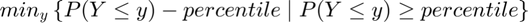

Generate Statistics from Prob Mass Function over States
back to Fan's Dynamic Assets Repository Table of Content.
Contents
- FF_AZ_DS_POST_STATS post ff_az_ds statistics generation
- Default
- Parse
- f(y), f(c), f(a): Generate Key Distributional Statistics for Each outcome
- f(y), f(c), f(a): Find p(outcome(states)), proability mass function for each outcome
- f(y), f(c), f(a): Compute Statistics for outcomes
- f(y), f(c), f(a): Store Statistics Specific to Each Outcome
- f(y), f(c), f(a): Store Statistics Shared Table All Outcomes
function [result_map] = ff_az_ds_post_stats(varargin)
FF_AZ_DS_POST_STATS post ff_az_ds statistics generation
Having derived f(a,z) the probability mass function of the joint discrete random variables, we now obtain distributional statistics. Note that we know f(a,z), and we also know relevant policy functions a'(a,z), c(a,z), or other policy functions. We can simulate any choices that are a function of the random variables (a,z), using f(a,z)
parameter structure provides a list of
- from result_map('ar_st_pol_names'), get list of outcome matrix on state space
- simulate each outcome using f(a,z) for probability draws
- compute key statistics: (1) mean (expectation=sum) (2) sd (3) min and max (4) iqr (5) fraction = 0 (6) percentiles including: 99.9, 99, 95, every 5 in between 5, 1, 0.01.
Uses fake binomial data when file is invoke with defaults.
@param param_map container parameter container
@param support_map container support container
@param result_map container contains policy function matrix, value function matrix, iteration results
@param mt_dist_az matrix N by M where N are asset states and M are shock states, the f(a,z) probability mass function derived earlier in ff_az_ds or ff_az_ds_vec
@return result_map container with statistics added to result_map
- the first element of each of these cell array is y(a,z), the outcome/choice at the state space points
- the second element of the cell is another container, which contains statistics computed for f(y) based on y(a,z) and f(a,z), f(y) is the probability mass function for outcome y given the stationary distribution f(a,z). The second element container also includes f(y) itself as well as f(y,z).
- additionally, result_map also stores some of the statistics for different variables jointly together. (a) tb_outcomes_meansdperc: where each row is a different outcome of the model, and each table column stores a different statistics of interest. (b) tb_outcomes_fracheld: which measures the fraction of asset held by different people.
@example
bl_input_override = true; result_map = ff_az_ds_post_stats(support_map, result_map, mt_dist_az, bl_input_override);
@include
Default
use binomial as test case, z maps to binomial win prob, remember binom approximates normal.
params_len = length(varargin); bl_input_override = 0; if (params_len == 4) bl_input_override = varargin{4}; end if (bl_input_override) % if invoked from outside overrid fully [support_map, result_map, mt_dist_az, ~] = varargin{:}; else clear all; close all; it_states = 6; it_shocks = 5; fl_binom_n = it_states-1; ar_binom_p = (1:(it_shocks))./(it_shocks+2); ar_binom_x = 0:1:(it_states-1); % a ar_choice_unique_sorted_byY = ar_binom_x; % f(z) ar_binom_p_prob = binopdf(0:(it_shocks-1), it_shocks-1, 0.5); % f(a,z), mass for a, z mt_dist_az = zeros([it_states, it_shocks]); for it_z=1:it_shocks % f(a|z) f_a_condi_z = binopdf(ar_binom_x, fl_binom_n, ar_binom_p(it_z)); % f(z) f_z = ar_binom_p_prob(it_z); % f(a,z)=f(a|z)*f(z) mt_dist_az(:, it_z) = f_a_condi_z*f_z; end % y(a,z), some non-smooth structure rng(123); mt_pol_a = ar_binom_x' - 0.01*ar_binom_x'.^2 + ar_binom_p - 0.5*ar_binom_p.^2 + rand([it_states, it_shocks]); mt_pol_a = round(mt_pol_a*2); mt_pol_c = ar_binom_x' + ar_binom_p + rand([it_states, it_shocks]); mt_pol_c = round(mt_pol_c*3); % Generate result_map result_map = containers.Map('KeyType','char', 'ValueType','any'); result_map('cl_mt_pol_a') = {mt_pol_a, zeros(1)}; result_map('cl_mt_pol_c') = {mt_pol_c, zeros(1)}; result_map('ar_st_pol_names') = ["cl_mt_pol_a", "cl_mt_pol_c"]; % support_map support_map = containers.Map('KeyType','char', 'ValueType','any'); support_map('bl_display_final_dist') = true; end
Parse
% support_map params_group = values(support_map, {'bl_display_final_dist'}); [bl_display_final_dist] = params_group{:}; % result_map params_group = values(result_map, {'ar_st_pol_names'}); [ar_st_pol_names] = params_group{:};
f(y), f(c), f(a): Generate Key Distributional Statistics for Each outcome
Loop over outcomes, see end of ff_az_vf_vecsv where these are created
for it_outcome_ctr=1:length(ar_st_pol_names)
f(y), f(c), f(a): Find p(outcome(states)), proability mass function for each outcome
Using from tools: fft_disc_rand_var_mass2outcomes, compute unique sorted outcomes for y(a,z) and find:
note: sum(mt_dist_az, 2) = result_map('cl_mt_pol_a'){2}, but not at small simulation grids. These two might be different because pol_a is based on a choices, mt_dist_az is based on a states
see end of ff_az_vf_vecsv outcomes in result_map are cells with two elements, first element is y(a,z), second element will be f(y) and y, generated here.
st_cur_output_key = ar_st_pol_names(it_outcome_ctr);
cl_mt_choice_cur = result_map(st_cur_output_key);
mt_choice_cur = cl_mt_choice_cur{1};
% run function from tools: fft_disc_rand_var_mass2outcomes
% <https://fanwangecon.github.io/CodeDynaAsset/tools/html/fft_disc_rand_var_mass2outcomes.html>
bl_input_override = true;
[ar_choice_prob_byY, ar_choice_unique_sorted_byY, mt_choice_prob_byYZ, mt_choice_prob_byYA] = ...
fft_disc_rand_var_mass2outcomes(st_cur_output_key, mt_choice_cur, mt_dist_az, bl_input_override);
f(y), f(c), f(a): Compute Statistics for outcomes
Using from tools: fft_disc_rand_var_stats, compute these outcomes:
- $\mu_Y = E(Y) = \sum_{y} p(Y=y) \cdot y $


- percentiles: 
- fraction of outcome held by up to percentiles:

% run function fft_disc_rand_var_stats.m from tools: % <https://fanwangecon.github.io/CodeDynaAsset/tools/html/fft_disc_rand_var_stats.html> [ds_stats_map] = fft_disc_rand_var_stats(st_cur_output_key, ar_choice_unique_sorted_byY', ar_choice_prob_byY'); % prcess results % retrieve scalar statistics: fl_choice_mean = ds_stats_map('fl_choice_mean'); fl_choice_sd = ds_stats_map('fl_choice_sd'); fl_choice_coefofvar = ds_stats_map('fl_choice_coefofvar'); fl_choice_min = ds_stats_map('fl_choice_min'); fl_choice_max = ds_stats_map('fl_choice_max'); fl_choice_prob_zero = ds_stats_map('fl_choice_prob_zero'); fl_choice_prob_min = ds_stats_map('fl_choice_prob_min'); fl_choice_prob_max = ds_stats_map('fl_choice_prob_max'); % retrieve distributional array stats ar_choice_percentiles = ds_stats_map('ar_choice_percentiles'); ar_choice_perc_fracheld = ds_stats_map('ar_choice_perc_fracheld'); % Display % if (bl_display_final_dist) % disp(['tb_prob_drv, Percentiles of Y, and Share of Y Held by Households up to this Percentile: ', st_cur_output_key]) % disp(tb_prob_drv); % end
f(y), f(c), f(a): Store Statistics Specific to Each Outcome
see intro section
% Append prob mass functions to ds_stats_map ds_stats_map('mt_choice_prob_byYZ') = mt_choice_prob_byYZ; ds_stats_map('mt_choice_prob_byYA') = mt_choice_prob_byYA; ds_stats_map('ar_choice_unique_sorted_byY') = ar_choice_unique_sorted_byY; ds_stats_map('ar_choice_prob_byY') = ar_choice_prob_byY; % ds_stats_map is second element of cell for the key for the variable % in result_map cl_mt_choice_cur{2} = ds_stats_map; result_map(st_cur_output_key) = cl_mt_choice_cur; % key stats ar_keystats = [fl_choice_mean fl_choice_sd fl_choice_coefofvar fl_choice_min fl_choice_max ... fl_choice_prob_zero fl_choice_prob_min fl_choice_prob_max ar_choice_percentiles]; cl_outcome_names(it_outcome_ctr) = st_cur_output_key; if (it_outcome_ctr == 1) mt_outcomes_meansdperc = ar_keystats; mt_outcomes_fracheld = ar_choice_perc_fracheld; else mt_outcomes_meansdperc = [mt_outcomes_meansdperc; ar_keystats]; mt_outcomes_fracheld = [mt_outcomes_fracheld; ar_choice_perc_fracheld]; end
end
f(y), f(c), f(a): Store Statistics Shared Table All Outcomes
Process mean and and percentiles
tb_outcomes_meansdperc = array2table(mt_outcomes_meansdperc); ar_fl_percentiles = ds_stats_map('ar_fl_percentiles'); cl_col_names = ['mean', 'sd', 'coefofvar', 'min', 'max', ... 'pYis0', 'pYisMINY', 'pYisMAXY', strcat('p', string(ar_fl_percentiles))]; tb_outcomes_meansdperc.Properties.VariableNames = matlab.lang.makeValidName(cl_col_names); tb_outcomes_meansdperc.Properties.RowNames = matlab.lang.makeValidName(cl_outcome_names); % Process Aset Held by up to percentiles tb_outcomes_fracheld = array2table(mt_outcomes_fracheld); cl_col_names = [strcat('fracByP', string(ar_fl_percentiles))]; tb_outcomes_fracheld.Properties.VariableNames = matlab.lang.makeValidName(cl_col_names); tb_outcomes_fracheld.Properties.RowNames = matlab.lang.makeValidName(cl_outcome_names); % Add to result_map result_map('tb_outcomes_meansdperc') = tb_outcomes_meansdperc; result_map('mt_outcomes_fracheld') = mt_outcomes_fracheld; % Display if (bl_display_final_dist) disp('tb_outcomes_meansdperc: mean, sd, percentiles') disp(tb_outcomes_meansdperc); % disp('tb_outcomes_fracheld: fraction of asset/income/etc held by hh up to this percentile') % disp(tb_outcomes_fracheld); end
tb_outcomes_meansdperc: mean, sd, percentiles
mean sd coefofvar min max pYis0 pYisMINY pYisMAXY p0_1 p1 p5 p10 p15 p20 p25 p35 p50 p65 p75 p80 p85 p90 p95 p99 p99_9
______ ______ _________ ___ ___ _____ ________ ________ ____ __ __ ___ ___ ___ ___ ___ ___ ___ ___ ___ ___ ___ ___ ___ _____
cl_mt_pol_a 5.844 2.5837 0.44212 2 12 0 0.10198 0.026853 2 2 2 2 3 3 4 5 5 7 8 8 9 9 10 12 12
cl_mt_pol_c 9.6213 4.2254 0.43917 1 19 0 0.028917 0.017043 1 1 2 3 6 6 7 8 10 11 13 13 15 16 17 19 19
end
ans =
Map with properties:
Count: 5
KeyType: char
ValueType: any